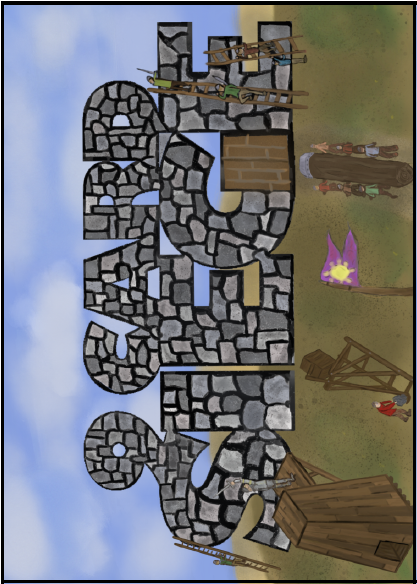

01 O cerco



Compre a primeira carta para iniciar o cerco.
Sobreviva a 3 dias, cada um com 7 turnos. A cada turno: verificação dos soldados nas linhas inimigas, compra de carta, evento, avanço inimigo, suas ações e verificação de derrota. Os efeitos das cartas duram apenas um turno. As seções amarela, azul e verde correspondem aos dias 1, 2 e 3.
Ataques precisam superar a força do inimigo: escadas 2, aríete 3, torre 4. Um sucesso recua uma casa. Na posição 1, use água fervente para +1 no dado, uma vez por turno. Corpo a corpo tem força 4. Um 1 natural no corpo a corpo reduz a moral; na água fervente também, salvo bônus positivo de evento aplicável.
Reparar e motivar exigem 5 ou 6, antes dos bônus. Você pode gastar uma provisão para +1 ao motivar. Uma vez por turno, troque 1 moral ou provisão por uma ação extra. Os recursos vão de 0 a 4.
Entrar no túnel custa 1 ação. A partir do turno seguinte, avance uma casa grátis por turno. A travessia rápida custa 1 ação e leva diretamente à saída, na direção em que você entrou. Nas linhas inimigas, incursões obtêm 1 provisão em 3–5 ou 2 em 6; sabotagem destrói um trabuco em 5–6. Um 1 natural nessas ações ou na verificação inicial causa captura, perda da carga e −1 moral. A carga máxima é 2; traga-a de volta ao castelo.
Dois inimigos em corpo a corpo ou um recurso em zero ao terminar o turno causam derrota. Três inimigos em corpo a corpo ou dois recursos em zero causam derrota imediata. Ao fim de cada dia: consuma uma provisão, retorne automaticamente soldados que estão no túnel e capture os que estão nas linhas inimigas. Complete o fim do terceiro dia com todos os recursos acima de zero para vencer.
“Mau tempo” permite apenas incursão e sabotagem, inclusive bloqueando movimento gratuito. Resultados naturais de 1 causam captura mesmo com bônus. “Chuva de flechas” aplica seu bônus a todos os ataques; bônus específicos de trilha não se aplicam a corpo a corpo. As condições de sobrevivência são verificadas também após as ações de fim de dia. Não há custo adicional de combate obrigatório: com dois inimigos na muralha, você precisa expulsar pelo menos um antes de encerrar o turno.